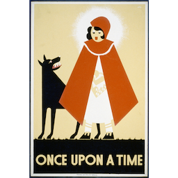

The aim of this application is to generate automatically plots that contain multiple branches.
Given an initial setup ("Your recipe" tab), the service will
generate multiple plots in a single run, ("Generate stories" tab).
After the generation process, it is possible to explore the generated stories ("Explore" tab)
This set up allows to generate a number of variations on the same initial setup [... TBC]
Author:
Fabio Corubolo - email : corubolo@gmail.com
Contributors:
Meriem Bendris -
Paul Watry -
Credits:
This is an internal mock-up.
Uses the JavaFF planner (Amanda Coles, Andrew Coles, Maria Fox and Derek Long.), available at http://www.inf.kcl.ac.uk/staff/andrew/JavaFF/
in the version maintained by David Pattison, at https://personal.cis.strath.ac.uk/david.pattison/ With large modifications from us.
The REST service was created using Resteasy: http://www.jboss.org/resteasy and Jackson
Graph visualization using Jung: http://jung.sourceforge.net/ and Jackson